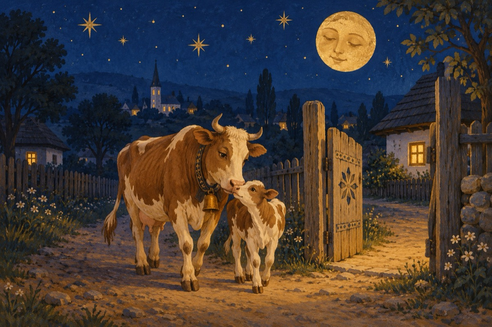

De la islaz
Veneam cu vacile de la islaz pe seară
Vițeii cu botnițele pe bot la uger se dădeau
Și nu țineau cont de biciul dat și de ocară
Când pe furiș din țâța vacii se-nfruptau!
Pe imaș în loc de botniță la vițel
Ungeam ugerul cu balega cea proaspătă
Și le feream mereu în chip și fel
S-ajungă vaca cu laptele din uger la ea acasă
La fiecare poartă ieșea ea gospodina
Și ne-ntreba cu grijă dacă vițelul a supt
Mințeam că nu, cum să dai pe vițel vina?
Când știam că toată ziua noi mingea am bătut
Minciuna întotdeauna are picioare scurte
Când ne venea rândul la vaci să fim
Ne refuzau pe vrute, pe nevrute
Pe motiv, că nu știam de viței să le ferim!
Vasile Groza